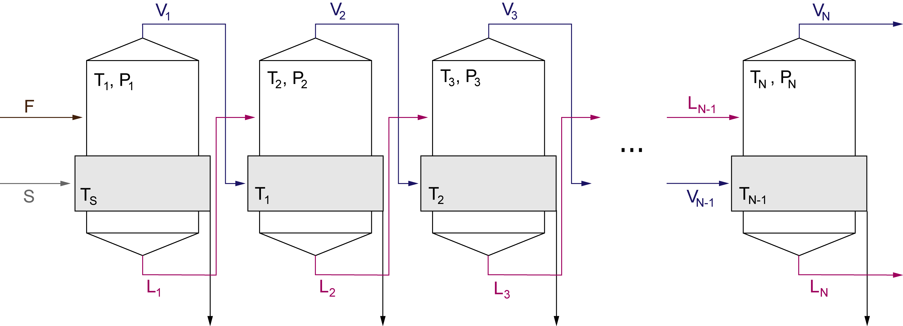

Modelagem acoplada de balanços de massa e energia com variação de pressão inter-efeitos, elevação do ponto de ebulição da solução aquosa de NaOH e restrição construtiva de áreas idênticas.

Clique para expandirA evaporação é uma das operações unitárias mais intensivas em energia da indústria de processos químicos. Empregada em larga escala na concentração de soda cáustica (NaOH), caldo de açúcar, licor negro na indústria de papel e celulose e tratamento de efluentes salinos, a eficiência do processo depende criticamente da reutilização térmica em múltiplos efeitos.
Em um evaporador de simples efeito, para evaporar aproximadamente $1\text{ kg}$ de água é necessário condensar cerca de $1\text{ a }1{,}2\text{ kg}$ de vapor vivo. Ao associar múltiplos estágios em série, o vapor de água gerado na ebulição da solução serve como meio térmico para o estágio subsequente, chegando a uma economia de vapor de $2{,}48\text{ kg evaporado / kg vapor vivo}$ com $N = 7$ efeitos (Tabela 2).
A presença de soluto não volátil reduz a pressão de vapor do solvente e eleva a temperatura de ebulição da mistura líquida em relação à água pura na mesma pressão. À medida que o NaOH se concentra de $10\%$ para $50\%$, a EPE no último efeito chega a $42{,}2\text{ °C}$ no caso-base de 3 efeitos, o que reduz o gradiente térmico disponível ($\Delta T$) para a troca de calor.
Por razões econômicas e de manutenção industrial, adota-se a restrição de áreas construtivas idênticas ($A_1 = A_2 = \cdots = A_N$). Como as taxas de transferência de calor, as propriedades físicas locais e as temperaturas dependem mutuamente das vazões e pressões intermediárias, o dimensionamento resulta em um sistema não linear acoplado, resolvido por iteração.
O cálculo abaixo roda no seu navegador e usa o mesmo código C11 do estudo, compilado para WebAssembly.
| Efeito | Vapor $V_i$ (kg/h) | Líquido $L_i$ (kg/h) | Concentração $x_i$ (% m/m) | Temp. Ebulição $T_i$ (°C) | Temp. Saturação $T_{sat,i}$ (°C) | Pressão $P_i$ (kPa) | EPE ($T_i - T_{sat,i}$, °C) | Força Motriz $\Delta T_i$ (°C) | Área Calculada $A_i$ (m²) |
|---|---|---|---|---|---|---|---|---|---|
| Aguardando processamento da simulação... | |||||||||
Valores originais obtidos para o caso-base de concentração de soda cáustica: $F = 10.000\text{ kg/h}$, $x_F = 10\%$, $x_N = 50\%$, $T_F = 50\text{ °C}$, $T_S = 160\text{ °C}$, $T_{sat,N} = 60\text{ °C}$ e $U = 2.000\,\mathrm{W/(m^2 \cdot K)}$ em todos os estágios. Tolerância numérica: $10^{-10}$.
| Efeitos ($N$) | Área por Efeito ($A_i$, m²) | Vapor Vivo ($S$, kg/h) | Economia de Vapor ($E$) | Fator Ótimo $\omega$ (SOR) | Limite Superior $\omega$ | Área Total Instalada ($\sum A_i$, m²) |
|---|---|---|---|---|---|---|
| 2 Efeitos | 58,083 | 5.940,4 | 1,3467 | 0,665 | 0,988 | 116,166 |
| 3 Efeitos | 70,128 | 4.593,6 | 1,7415 | 0,496 | 0,937 | 210,384 |
| 4 Efeitos | 89,608 | 3.949,4 | 2,0256 | 0,445 | 0,884 | 358,432 |
| 5 Efeitos | 125,442 | 3.585,8 | 2,2310 | 0,429 | 0,823 | 627,210 |
| 6 Efeitos | 211,225 | 3.363,0 | 2,3788 | 0,377 | 0,743 | 1.267,350 |
| 7 Efeitos | 684,210 | 3.221,2 | 2,4836 | 0,345 | 0,613 | 4.789,470 |
O modelo matemático fundamenta-se nos princípios de conservação da massa, conservação de soluto e primeiro princípio da termodinâmica aplicados a cada estágio em regime estacionário.
O solver resolve o sistema não linear com dois laços iterativos aninhados.
MENDONÇA, Pedro Paulo Nogueira; DUARTE, Cláudio Roberto. Projeto de evaporadores de múltiplo efeito com influência da pressão e EPE. In: XVI Congresso Brasileiro de Engenharia Química em Iniciação Científica (COBEQ-IC). Campinas: UNICAMP, 2026.